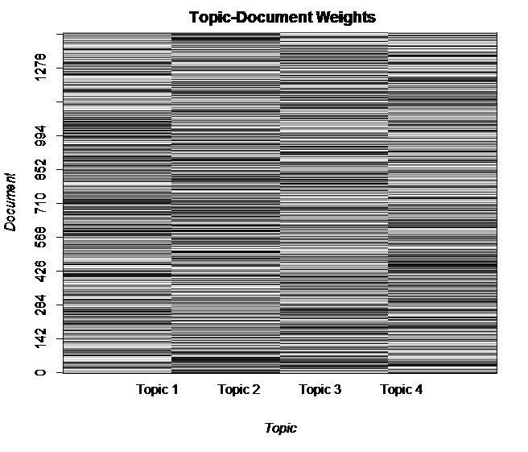
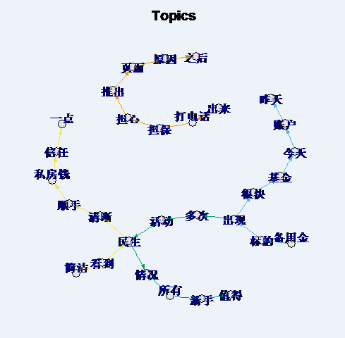
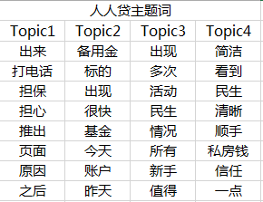
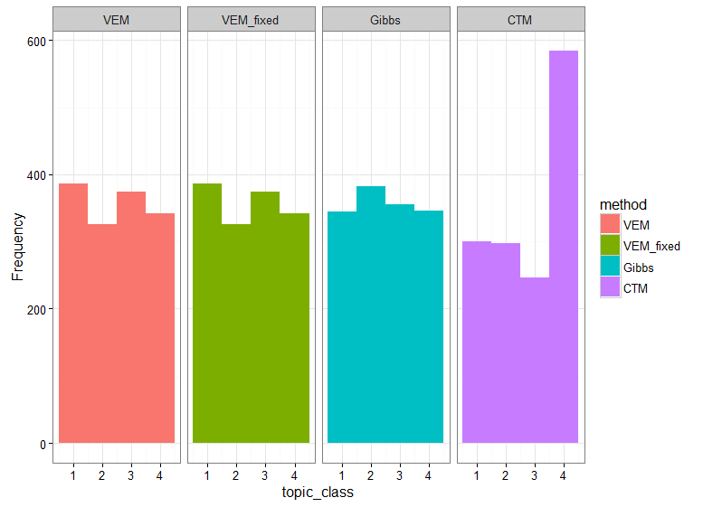
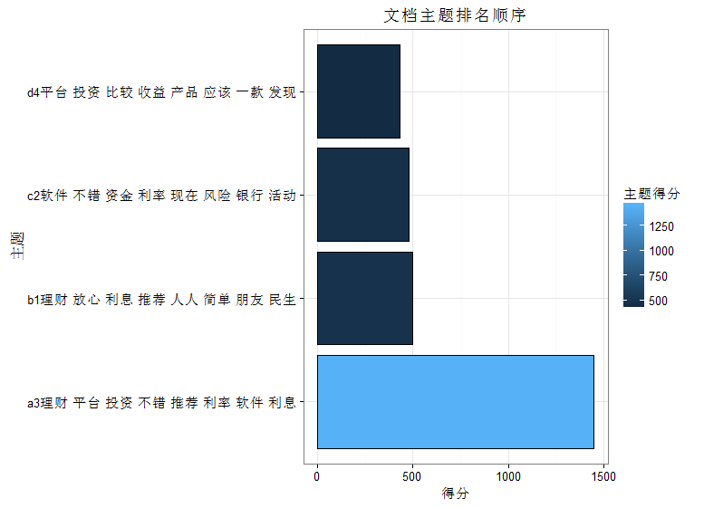
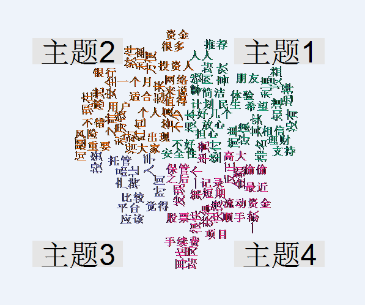

|
|
关键词提取 |
主题模型分析
我们通过主题模型，将企业评论数据分成不同类的主题，挖掘出评论数据的主要内容，
将困惑度设置为2~25，使用LDA_VEM模型，得到困惑度与信息熵的变化趋势如上图所示， |
|

上图展示的文档主题概率分布，颜色越深，表示属于该主题的概率越高。由图中可以看出， |
|  |
|  |
|
上述两图是抽取每个主题阈值在0.002以上的前8个词，绘制成网络图，发现主题之间不是很明显， |
|

对评论数据分别建立LDA_VEM、LDA_VEM_fixed、LDA_Gibbs、CTM四种模型，设置主题数k=4， |
|

由主题得分发现，主题之间存在交互现象，b1、c2、d4主题得分差不多，主题区分不是很明显，
|
|

上图显示的是各个主题的词云图，发现主题之间交互的词还比较多，说明主题之间区分不是很明显。 |